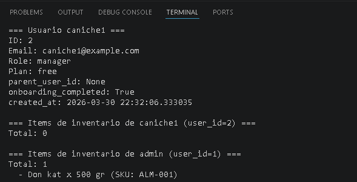
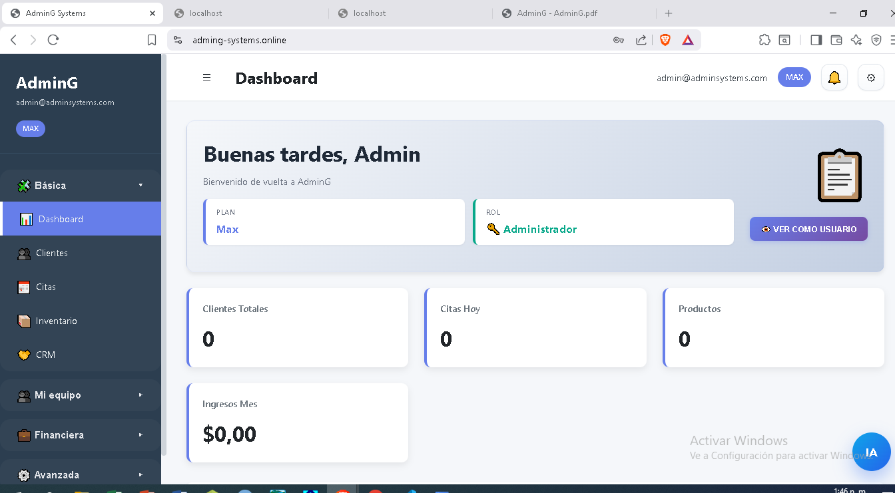

5 Anexo D
5.1 Calidad, seguridad y gobernanza
Eduardo Martínez
5.2 Proposito del anexo
Este anexo define la estrategia de calidad para AdminG Systems. Su funcion es verificar que los requerimientos del Chapter 2, la arquitectura del Chapter 3 y el modelo de datos del Chapter 4 se mantengan confiables cuando el sistema evoluciona. La calidad no se limita a pruebas; incluye seguridad, control de versiones, configuracion de produccion, revisiones, trazabilidad, documentacion y criterios de despliegue.
AdminG se ejecuta en un contexto sensible: administra usuarios, clientes, pagos, facturas, inventario y datos de negocio. Por ello, la calidad debe tratarse como una condicion de operacion, no como una actividad final. Cada cambio debe responder tres preguntas: que comportamiento modifica, que riesgo introduce y que evidencia demuestra que sigue funcionando.
5.3 Estrategia de calidad
La calidad se organiza en cinco frentes. El primero es calidad de codigo: modulos pequeños, responsabilidades separadas, nombres claros, routers por dominio, schemas de entrada y salida, y menor duplicidad posible. El segundo es calidad funcional: cada flujo principal debe poder probarse desde la interfaz o por API. El tercero es calidad de datos: transacciones, claves foraneas, migraciones y validaciones. El cuarto es seguridad: autenticacion, autorizacion, secretos, CORS y proteccion de endpoints. El quinto es operacion: despliegue reproducible, logs, backups, monitoreo minimo y rollback documentado.
5.4 Seguridad aplicada
El sistema debe validar la configuracion al iniciar en produccion. Las variables criticas incluyen APP_ENV, SECRET_KEY, politica de CORS, origen del frontend, SMTP si se usa recuperacion de contrasena y exposicion del reset token. En produccion, CORS_ALLOW_ALL_ORIGINS debe estar desactivado y reemplazado por una allowlist. Los secretos no deben quedar en el repositorio ni en capturas.
La autenticacion usa contrasenas hasheadas y tokens JWT. La autorizacion se apoya en rol, plan, limites y caracteristicas. Esto es importante porque no basta con saber quien es el usuario; tambien se debe saber que puede hacer segun su suscripcion, su estado de prueba y su posicion dentro de la organizacion. Los endpoints administrativos o de reset de base de datos deben permanecer deshabilitados o estrictamente protegidos en entornos publicos.
5.5 Pruebas realizadas
| Area | Prueba |
|---|---|
| Autenticacion | Registro, login, refresh token, usuario inactivo, contrasena incorrecta. |
| Planes | Acceso permitido y denegado segun PlanFeature y PlanLimit. |
| Clientes | CRUD, aislamiento por usuario, busqueda y validaciones. |
| Citas | Crear, editar, cancelar, relacionar con cliente y servicio. |
| Pagos | Registro, estados, montos, relacion con factura o caja. |
| Inventario | Crear SKU, stock minimo, entrada, salida y bloqueo por plan. |
| Reportes | Metricas del dashboard y filtros de fecha. |
| Despliegue | GET /health, carga del login, carga del dashboard autenticado. |
5.6 Gobernanza Git y documentacion
La documentacion A-E debe vivir como evidencia del avance. Cada anexo tiene una responsabilidad: requerimientos, arquitectura, datos, calidad e implementacion. Cuando un cambio modifica una regla funcional, se actualiza Anexo A; si modifica infraestructura, Anexo B; si cambia modelos o migraciones, Anexo C; si cambia pruebas, seguridad o criterios de aceptacion, Anexo D; si cambia endpoints, capturas o despliegue, Anexo E.
Se realizaron ramas tematicas como docs/anexos-a-e, feat/payments-trial-qr, feature/inventorio o sync-prod. Los commits deben ser descriptivos: docs: organize annexes a-e, feat: Vet feature and password, fix: Frontend bussiness details.

Registrar fecha y comando del ultimo despliegue en Oracle VM.
Configurado UFW, firewall de Oracle, Nginx, HTTPS o systemd.

5.7 Riesgos y controles
El primer riesgo es exponer la aplicacion por HTTP sin TLS. El control recomendado es dominio, certificado HTTPS y redireccion. El segundo riesgo es usar SQLite sin backups. El control es copia programada y migracion futura a PostgreSQL. El tercero es dejar configuraciones de desarrollo en produccion, como CORS abierto, reset token expuesto o endpoint de reset de base de datos. El control es validacion de runtime y checklist de despliegue.
5.8 Cierre
La calidad de AdminG depende de mantener alineados codigo, datos, despliegue y documentacion. Este anexo establece el marco para revisar cada entrega y conecta directamente con el Chapter 6, donde se presenta la implementacion y la evidencia de operacion.